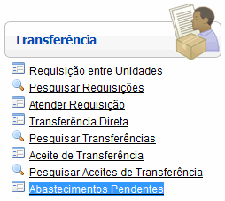
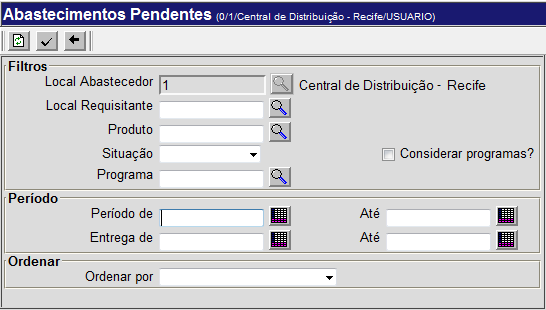
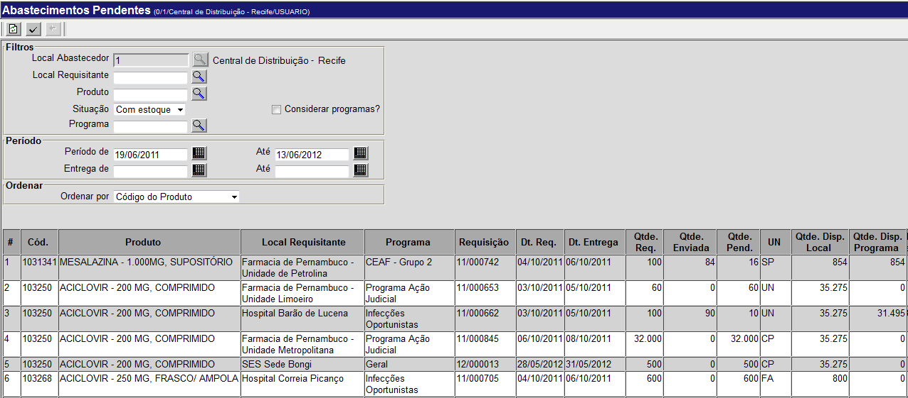
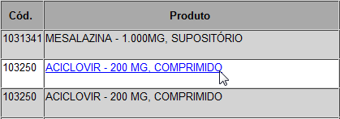
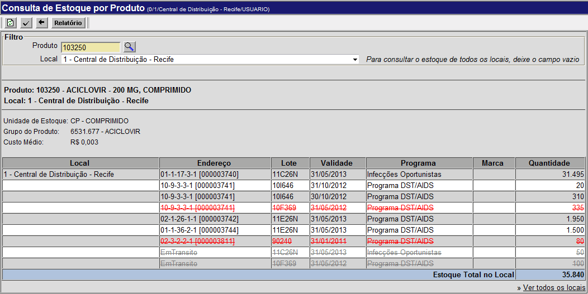
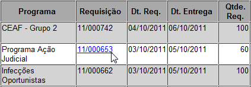

Abastecimentos Pendentes [ Voltar ]
Utilize esta
tela para identificar todas as requisições pendentes para o seu local, detalhadas por produto.
O formulário "Abastecimentos Pendentes"
encontra-se dentro do menu "Transferência".

Ao clicar no formulário, o sistema exibirá a seguinte
tela:

Para gerar o relatório, siga os passos abaixo:
1º Passo: configure os filtros da consulta. Nenhum dos campos é obrigatório, por isso é possível simplesmente clicar no botão  e o sistema mostrará todos os abastecimentos, para todos os locais, programas, periodos, etc. Para resultados mais específicos, é recomendado que a maior quantidade possível de filtros seja preenchida. e o sistema mostrará todos os abastecimentos, para todos os locais, programas, periodos, etc. Para resultados mais específicos, é recomendado que a maior quantidade possível de filtros seja preenchida.
- Local Abastecedor. Este campo não pode ser editado, e sempre conterá o código do seu local atual;
- Local Requisitante. Informe aqui um local solicitante específico. Clique no botão
 [Procurar] para selecioná-lo a partir de uma listagem contendo todos os locais cadastrados; [Procurar] para selecioná-lo a partir de uma listagem contendo todos os locais cadastrados;
- Produto. Se desejar, você pode escolher gerar o relatório de distribuição para um produto específico. Neste caso, informe-o aqui. Clique no botão [Procurar] para selecioná-lo a partir de uma listagem contendo todos os produtos cadastrados;
- Situação. Selecione aqui, se for o caso, a situação do produto. As opções possíveis são com ou sem estoque;
- Considerar Programas? Marque esta caixa de seleção se desejar que os resultados considerem os programas cadastrados no sistema;
- Programa. Se desejar, informe aqui um programa específico para esta consulta. Clique no botão [Procurar] para selecioná-lo a partir de uma listagem contendo todos os programas cadastrados;
- Período de/até. Se desejar, informe nestes campos as datas inicial e final para compor o período dos resultados. Clique no botão
 para selecionar a data desejada. Dicas para preenchimento de campos de data: para selecionar a data desejada. Dicas para preenchimento de campos de data:
- Data atual: digite o sinal . (ponto) e pressione a tecla "Enter" para que o sistema retorne a data atual;
- Data do mês corrente: digite o dia do mês e pressione a tecla "Enter" para que o sistema retorne o mês e ano correntes;
- Dias a contar da data atual: digite o sinal + (mais) ou - (menos) antes do número de dias em referência à data atual e pressione a tecla "Enter" para a data anterior ou posterior à data atual.
- Entrega de/até. Informe neste campo as datas inicial e final da entrega dos abastecimentos, se for necessário;
- Ordenar por. Você poderá escolher aqui se deseja que os resultados sejam ordenados por código, descrição, local requisitante ou data de requisição (de maneira ascendente ou descendente);
2º Passo: clique no botão para processar a consulta. Os resultados de sua pesquisa serão exibidos em uma lista na tela.

Dependendo do status dos produtos, estes poderão ser mostrados em diversas cores na tabela:
- Vermelho - não há estoque para atender a requisição;
- Amarelo - a requisição pode ser atendida parcialmente;
- Cor padrão (preto, como na imagem acima) - a requisição pode ser completamente atendida.
3º Passo (opcional): consulte o estoque dos produtos. Na tabela, os elementos das colunas Produto e Requisição podem ser clicados.

Ao clicar no nome de algum produto, o usuário è levado ao formulário "Consulta de Estoque por Produto", onde será mostrado o estoque, no local atual, do produto em questão.

Para retornar ao formulário anterior, clique no botão  . .
4º Passo: confirme uma requisição pendente. Na tabela, procure nos resultados o abastecimento que quiser confirmar e clique no seu número de requisição.

Quando o formulário abrir, siga os passos explicados no manual de Requisição Entre Unidades.
Para voltar à tela anterior, clique em [Voltar].
Ir
para o topo da página
|